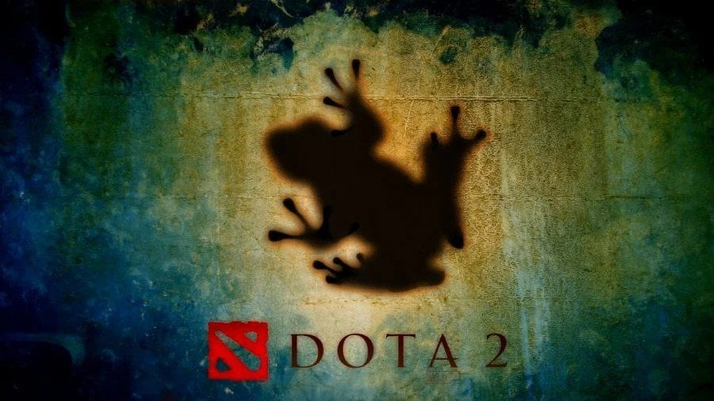
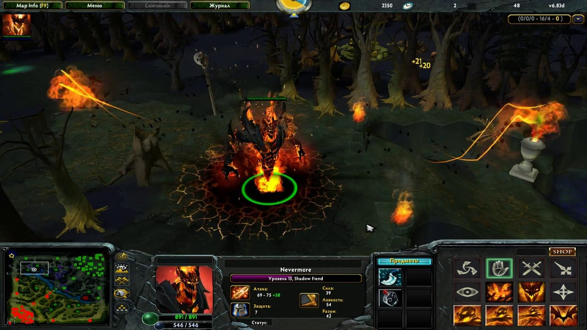
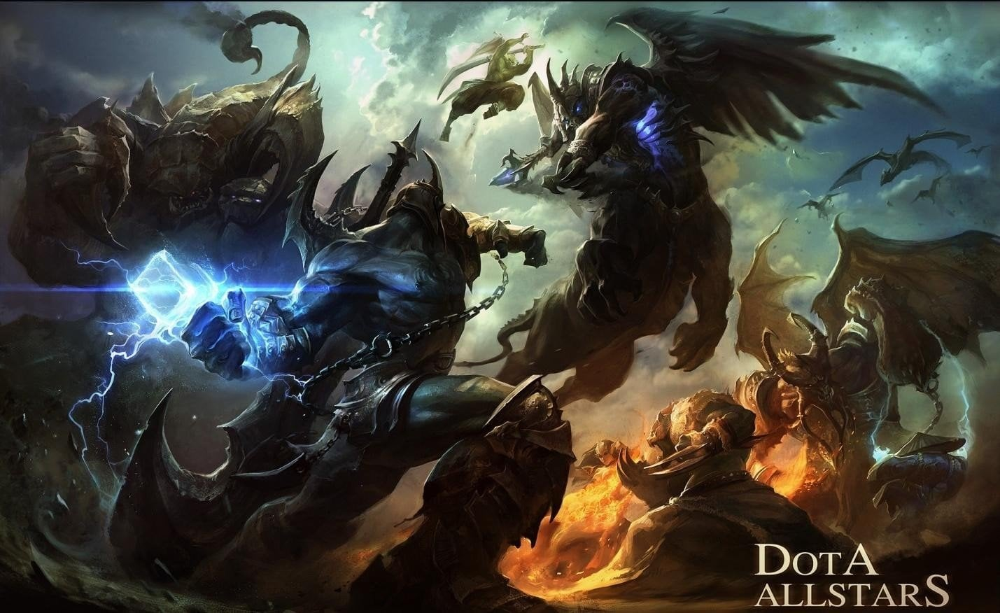
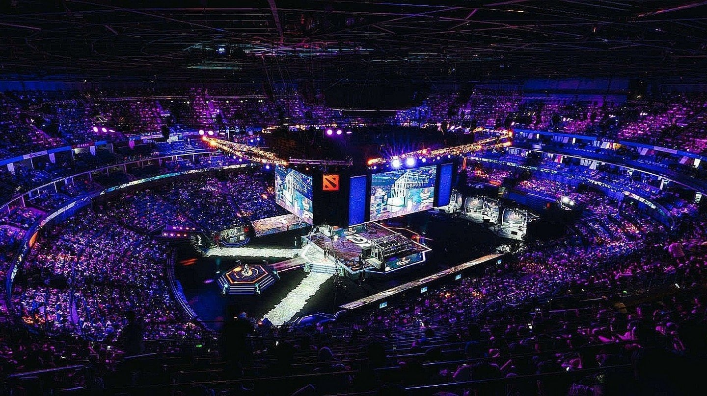
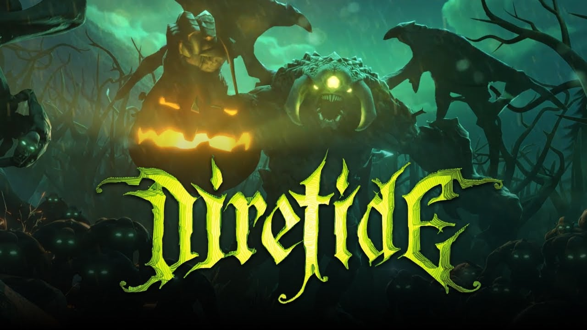

Et moba-spill, eller massivt multiplayer online arena, er en populær videospillsjanger der lag konkurrerer mot hverandre i strategiske kamper. Dota 2 er et av de mest kjente og vellykkede mobspillene i dag. Millioner av spillere over hele verden deltar i turneringer og ligaer på alle nivåer. I denne artikkelen vil vi se på historien til opprettelsen og utviklingen av Dota 2, samt dens innvirkning på spillfellesskapet.
Dota 1 ble laget av en amatørmodder kalt IceFrog for spillet Warcraft 3 i 2003. Moden ble raskt populær blant fansen takket være dens unike kombinasjon av strategi, action og lagspillelementer.
I 2010, da moden ble populær i verden av nettspill, kjøpte Valve Corporation rettighetene til å bruke sin mod for sin egen spillmotor fra icefrog. Etter dette oppkjøpet ga Valve ut en betaversjon av det som ble Dota 2 9. juli 2013. Nå har spillet mange flere funksjoner enn før. For eksempel talechat og forbedrede matchmaking-algoritmer. I tillegg la Valve til viktige endringer som fullstendig redesignede helteevner eller å ha forskjellige gjenstander tilgjengelig under hver kamp som endret seg avhengig av hvilket lag som spilte mot hverandre. Dette tillot mye mer variasjon i spillingen sammenlignet med forgjengeren, samtidig som det forble tro mot det originale Dota 1-konseptet.
Siden lanseringen i 2013 har Dota 2 blitt et av de mest populære moba-spillene blant spillere over hele verden takket være den unike kombinasjonen av strategisk spilling og intense lagkamper som holder spillerne engasjert i timevis. I tillegg har det blitt arrangert profesjonelle eSport-turneringer rundt om i verden siden 2014, hvorav noen har sett vinnerlag tjene millioner av dollar i premiepenger. Dette øker spillerengasjementet ytterligere ettersom konkurrerende spillere streber etter å bli best i sin region eller til og med verden! Valve Corporation arrangerer en årlig turnering kalt The International, som de siste årene har hatt en premiepott som varierer fra $20 millioner til $40 millioner. Dette viser nok en gang hvor vellykket dette spillet har blitt over tid, ikke bare takket være involveringen av spillere, men også de enorme investeringene fra sponsorer fra forskjellige land.
For å oppsummere, siden den første utgivelsen i 2013, har Dota 2 blitt et av de største navnene i både eSport og tradisjonelle spillsamfunn. Ikke bare tilbyr det en unik opplevelse som holder folk engasjert, men det gir også funksjoner som er ulikt noen annen mobb (som store premiepotter). Tatt i betraktning alle disse faktorene, kan vi med sikkerhet si at du bare kan forvente suksess fra dette fantastiske spillet!
